Refinement types, ghost code and ownership for OxCaml
This page follows my talk on Vox from September 2026, with the slides' pictures and the spoken text.
AI agents now write almost all of our code, and they keep getting better. They write it faster than I could read it. So how do people stay on top of what that code does? I see three possible worlds. In the first, the agents go, and nobody reads the code. Today that means bugs and a tangled architecture. Agents will get better at avoiding those, but I still lose my map of the code base, so I can't steer it. In the last, I review everything the agent writes. I stay in charge, but I become the bottleneck, and reading machine-written code line by line is not work anyone enjoys.
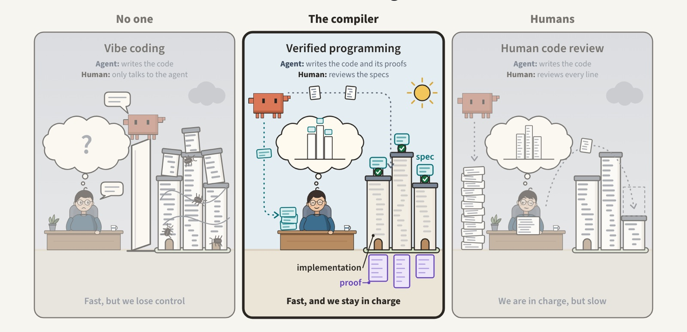
The third is my proposal. Each module comes with a short specification, and the agent's code is checked against it by proof, or by testing where there is no proof yet. A spec can be partial or full; the more precise it is, the less code I review. For a sort, “sorted” alone leaves the code to read; “a sorted permutation of the input” leaves only its speed. Together, the specs are my map of the code base, so I can keep steering. With specs, people stay on top of code that agents write, and stay relevant as the agents improve.
Here is what a spec looks like in Vox. This is absolute value, declared to return a nonnegative int. It is rejected, with a counterexample: x is −1. The code is wrong, of course: it forgets the minus.
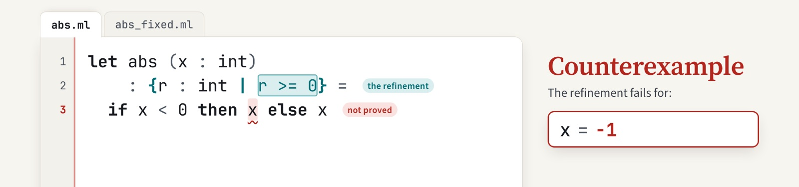
= 0, implemented as if x < 0 then x else x. Counterexample: x = -1." />Add the minus. It is still rejected: x is min_int, the smallest int, and minus min_int wraps around to itself.
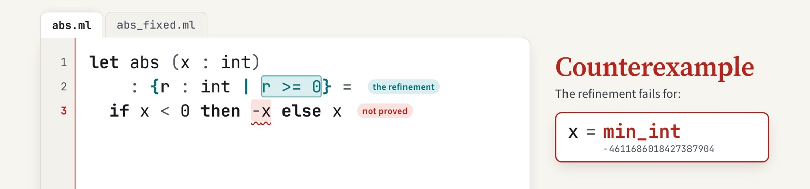
With the precondition that x is greater than min_int, it is proved. Now every caller of abs has to show that its argument is not min_int.
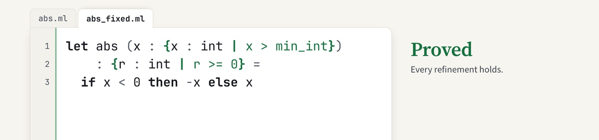
min_int on the argument, abs is proved: every refinement holds." />The example used a refinement type and a verification condition. Vox is a fork of OxCaml, and it adds four groups of features. Specs are refinement types and dependent function types. A spec can be tested: assume_ takes a value and returns it at the refined type, and checks the predicate when the code runs. Or it can be proved at compile time: each refinement becomes a verification condition for an SMT solver. Where the solver needs help, a proof is ordinary code in two new modes, total and ghost, and the compiler erases it. The last group is resources: tokens for shared mutable state, prophecies for borrowing, atomic invariants for concurrency, and time credits for running time.
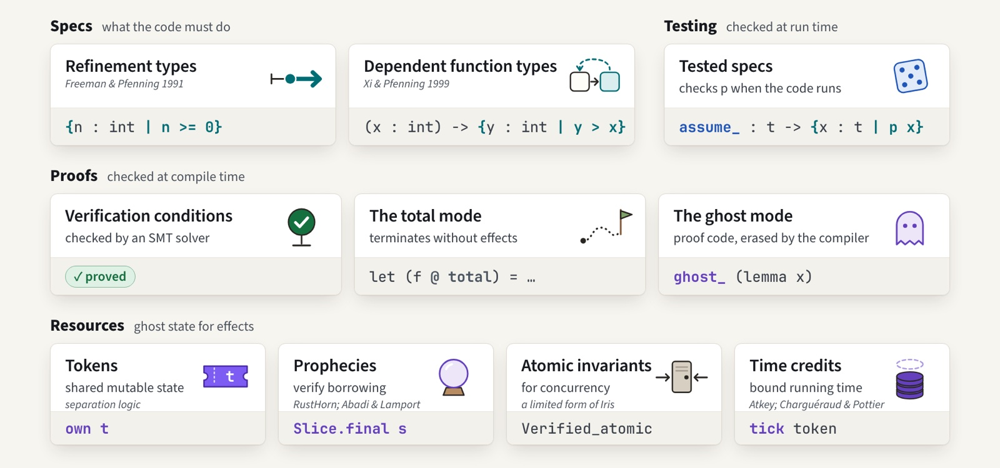
With these features, we have verified 25 programs. Data structures: a union–find in inverse-Ackermann amortized time, doubly linked rings, AVL sets and more. Algorithms: quicksort, in place and in parallel; merge sort; Myers diff; RSA; and Fibonacci by fast doubling, proved equal to its naive definition. Formats and concurrency: an LZ4 codec, an HTTP parser, a channel and locks. Languages and compilers: regular expressions, DFA minimization, e-graphs, register allocation, and a compiler to WebAssembly. Ten of them manage mutable state, two have a proved running time, and three are concurrent or parallel.
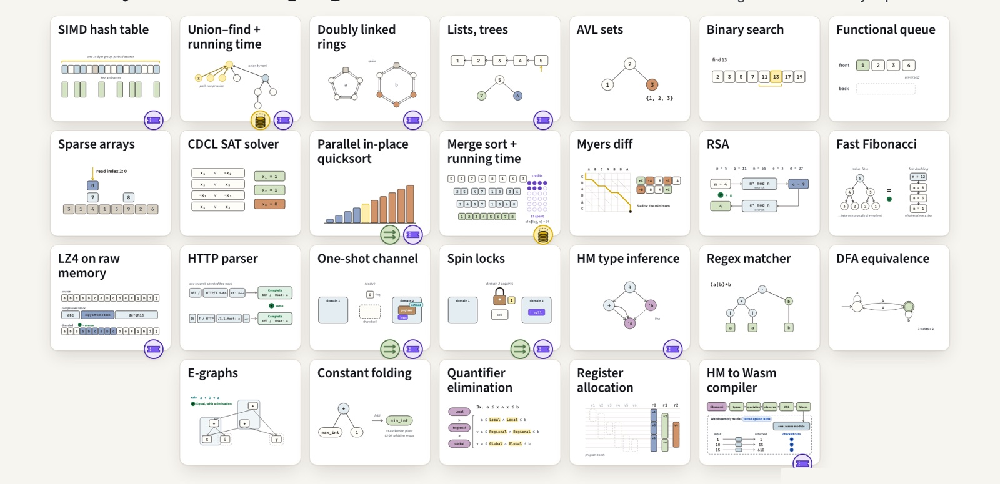
Each program has a spec, code and a proof. The largest is the compiler from a small ML to WebAssembly: 2,852 lines of code, under a spec of 283 lines. That spec is stated against a model of WebAssembly, 1,065 lines, which we trust. The proofs are much larger. Agents wrote them, and the compiler checks them. Vox itself was built the same way: agents wrote its compiler changes too, and I reviewed their designs and tests.
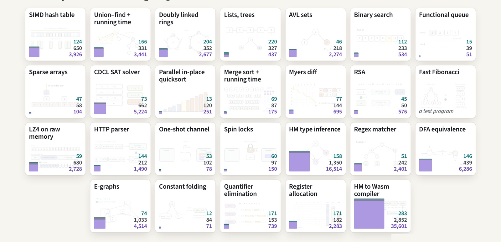
Every program, with a link to the file where its specification is stated:
add and union; equal holds exactly for equal setsSat comes with a model, and Unsat means none existsOne of them up close: Hindley–Milner type inference on a mutable type graph. The picture shows the heap after inferring the type of id id: types are cells with levels, and unification writes union–find links into them, as in OCaml's own type checker.
The proof shows that inference is sound and principal against a declarative typing relation, so when it rejects a term, the term has no type. The proof reads the heap back as mathematical types, algebraic data types with no pointers, and states unification as solving equations over them. Levels decide what a let may generalize, and the proof keeps an invariant on them. The spec is 158 lines, the implementation 1,350, and the proof 16,514.
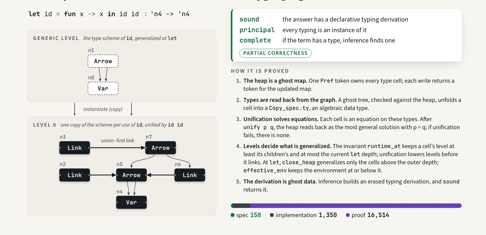
The Hindley–Milner proof uses idioms that recur across these programs. Specs are types, so each place OCaml has a type carries a spec. Signatures hold laws, and functors can require them. Type definitions carry invariants; argument and result types carry preconditions and postconditions. Specs pass through polymorphic functions: fork_join is enough to verify a parallel quicksort. Proofs are code: a function type is a lemma, where a parameter is “for all” and recursion is induction. ghost_ calls a proof, checked and erased. assume_ marks a spec that is tested until it is proved. Ghost fields carry proof data, and tokens carry effects.
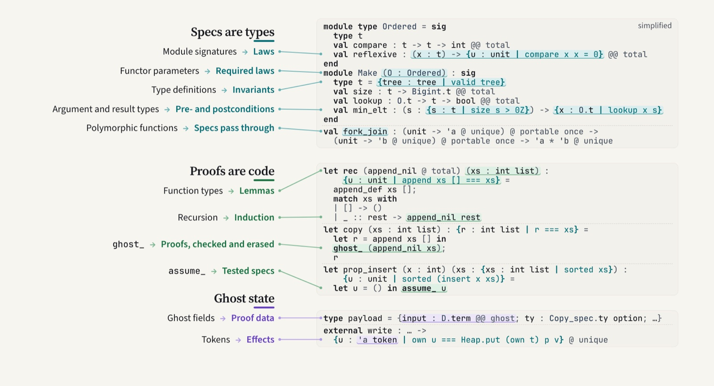
These idioms work because refinement types fit OxCaml's modes. Vox adds two axes, total and ghost, and uses uniqueness and locality for tokens and loans, and portability in the signatures of atomic invariants.
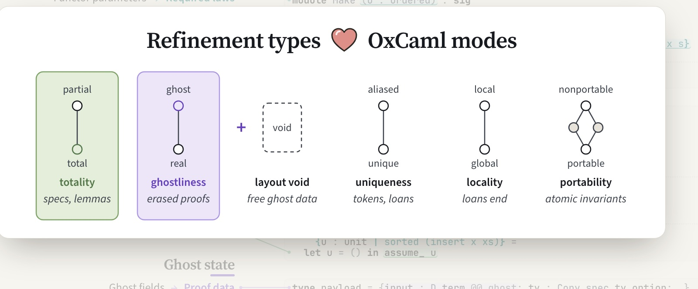
Vox is built into OxCaml, so what does it change? Here is the repository as a treemap: every file is a rectangle sized by its lines, 1.9 million without vendored libraries. The lines Vox adds are coloured, warm inside the compiler and cool outside it. Most of them are outside the compiler: mostly tests, including verified programs and their specs, then the verified library, and tools. The compiler's part is about 26 thousand lines.
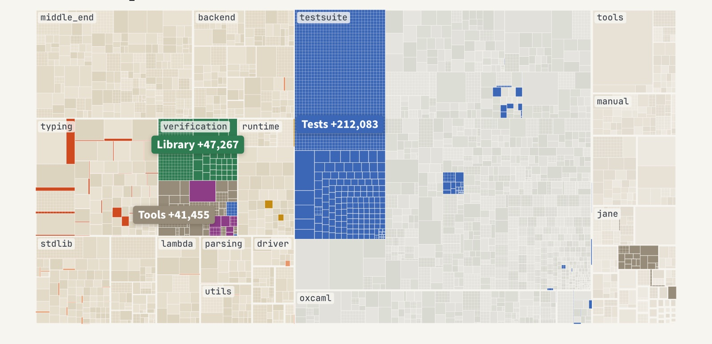
First, a question: is this the right design for OxCaml? I would like to hear what you think. Next, a production implementation in OxCaml itself, designed together with the OxCaml team. Then the open design questions, such as termination of mutable code, and the soundness of the checker itself. And a path to adoption: specs on existing interfaces, then tests, then proofs.
The goal is that much of our code carries specs, checked by proof, or by tests where there is no proof yet, so people stay in charge of code that agents write. It is a new way of working, and whether programmers will like it is an open question. The way to find out is to try it in practice, on real code.
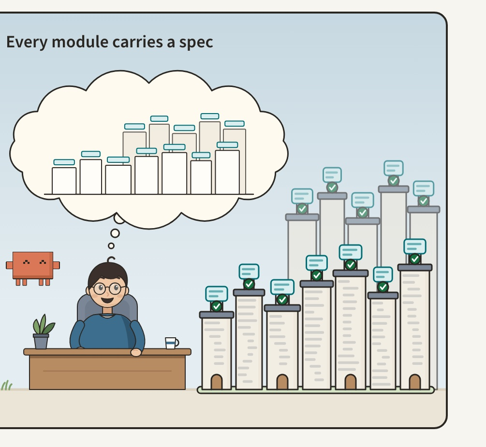
vox branch and configure it with a local install prefix, as described in the README.PATH../dev init, then ./dev test vox/bounded_clamp.ml. Your own files need the flag -extension refinement_types.The tour of the tests walks through the examples, and Verification programming explains how to write contracts and reusable proofs. Vox is research software under active development. If you would like to use it or work on it, email me.